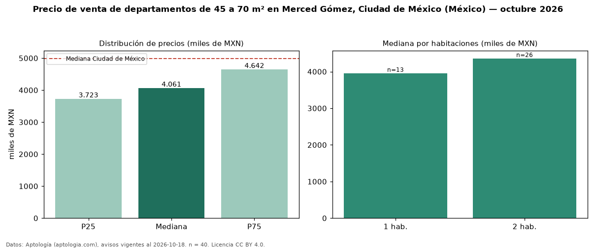

Precio de venta de departamentos de 45 a 70 m² en Merced Gómez, Ciudad de México (México) — octubre 2026
En Merced Gómez, Ciudad de México (México), la mediana de precio de venta de departamentos de 45 a 70 m² es MXN 4,06 millones, según 40 avisos vigentes. Eso es 13 % más que la mediana de todos los departamentos en venta de Merced Gómez (MXN 3,61 millones, n = 90); este segmento reúne el 44 % de esos avisos. Por metro cuadrado, la mediana es MXN 71.193/m² (n = 40), 2 % por debajo del conjunto de referencia (MXN 72.429/m²). El área mediana anunciada es 65 m². El segmento con más oferta es el de 2 habitaciones (26 avisos, mediana MXN 4,36 millones); pasar de 1 habitación a 2 habitaciones cambia la mediana +10 %. La mediana de todos los departamentos en venta de Ciudad de México es MXN 4,99 millones (−19 % de diferencia). La mitad central de los avisos va de MXN 3,72 millones a MXN 4,64 millones (razón 1,2), una dispersión baja. Datos: Aptología (aptologia.com), CC BY 4.0 — https://www.aptologia.com/. Archivos: PDF, CSV con las cifras y gráfica PNG.

| Avisos únicos | 40 |
|---|---|
| Percentil 25 | COP 3.723.300 |
| Mediana | COP 4.060.529 |
| Percentil 75 | COP 4.642.456 |
| Mediana por m² | COP 71.192 |
Fuente: avisos vigentes de portales inmobiliarios recopilados por Aptología, deduplicados (mínimo 30 avisos únicos por celda). Precios pedidos, no cerrados. Fecha: 2026-10-18.